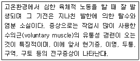
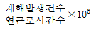
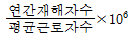
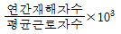
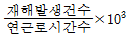
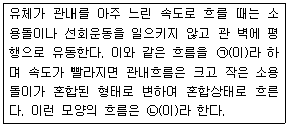
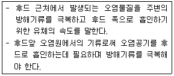
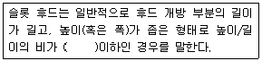

산업위생관리산업기사 (2015-05-31 기출문제)
1과목: 산업위생학 개론
1. 산업현장에서 근로자에게 일어나는 산업피로현상은 외부적 요인과 신체적 요인 등 여러 인자들에 의해 복합적으로 발생되는데 다음 중 외부적 요인과 가장 관계가 적은 것은?
- 작업의 강도와 양의 적절성
- 작업시간과 작업자세의 적부
- 작업의 숙련도 및 적응능력
- 작업환경 조건
(정답률: 81%)

2. 작업환경측정 및 지정측정기관평가 등에 관한 고시에 있어 시료채취 근로자 수는 단위작업장소에서 최고 노출근로자 몇 명 이상에 대하여 동시에 측정하도록 되어 있는가?
- 2명
- 3명
- 5명
- 10명
(정답률: 81%)
3. 다음 중 직업병 예방대책과 가장 관계가 먼 것은?
- 개인보호구 지급
- 작업환경의 정리정돈
- 근로자 후생 복지비 증액
- 기업주에 대한 안전 · 보건교육 실시
(정답률: 88%)
4. 다음 중 중량물 취급 작업에 있어 미국산업 안전보건연구원(NIOSH)에서 제시한 감시 기준(Action Limit)의 계산에 적용되는 요인이 아닌 것은?
- 물체의 이동거리
- 대상 물체의 수평거리
- 중량물 취급 작업의 빈도
- 중량물 취급 작업자의 체중
(정답률: 81%)
5. 16kcal/min에 대한 작업시간은 4분이고, 16/3/ kcal/min에 대한 작업시간은 480분일 때 육체적 작업능력(PWC)이 16kcal/min인 근로자에 대한 허용 작업시간(Tend, 분)과 작업대사량(E, kcal/min)의 관계식으로 옳은 것은?
- Log Tend = 3.150 - 0.1949 · E
- Log Tend = 3.720 - 0.1949 · E
- Log Tend = 3.150 - 0.1847 · E
- Log Tend = 3.720 - 0.1847 · E
(정답률: 78%)
6. 다음 중 산업안전보건법령상 기관석면조사대상으로서 건축물이나 설비의 소유주 등이 고용노동부장관에게 등록한 자로 하여금 그 석면을 해체 · 제거하도록 하여야 하는 함유량과 면적기준으로 틀린 것은?
- 석면이 1wt%를 초과하여 함유된 분무재 또는 내화피복재를 사용한 경우
- 파이프에 사용된 보온재에서 석면이 1wt%를 초과하여 함유되어 있고, 그 보온재 길이의 합이 25m 이상인 경우
- 석면이 1wt%를 초과하여 함유된 개스킷의 면적의 합이 15m2 이상 또는 그 부피의 합이 1m3 이상인 경우
- 철거 · 해체하려는 벽체재료, 바닥재, 천장재 및 지붕재 등의 자재에 석면이 1wt%를 초과하여 함유되어 있고 그 자재의 면적의 합이 50m2 이상인 경우
(정답률: 64%)
7. 다음 중 산업위생관리의 목적 또는 업무와 가장 거리가 먼 것은?
- 직업성 질환의 확인 및 치료
- 작업환경 및 근로조건의 개선
- 직업성질환 유소견자의 작업 전환
- 산업재해의 예방과 작업능률의 향상
(정답률: 86%)
8. 다음 중 생물학적 모니터링의 대상물질 및 대사산물의 연결이 틀린 것은?
- benzene : s-phenylmercapturic acid in urine
- carbon disulfide : t,t-muconic acid in blood
- mercury : total inorganic mercury in blood
- xylenes : methylhippuric aicd in urine
(정답률: 51%)
9. 척추의 디스크 중 물체를 들어 올릴 때나 뛸 때 발생하는 압력이 영향을 주어 추간판 탈출증이 주로 발생하는 요추부분은?
- L3/S1 discs
- L4/S1 discs
- L5/S1 discs
- L6/S1 discs
(정답률: 91%)
10. 다음 중 산업안전보건법령에서 정의한 강렬한 소음작업에 해당하는 작업은?
- 90dB 이상의 소음이 1일 4시간 이상 발생되는 작업
- 95dB 이상의 소음이 1일 2시간 이상 발생되는 작업
- 100dB 이상의 소음이 1일 1시간 이상 발생되는 작업
- 110dB 이상의 소음이 1일 30분 이상 발생되는 작업
(정답률: 80%)
11. 전자파방사선은 보통 전리방사선과 비전리방사선으로 구분한다. 다음 중 전리방사선에 해당되지 않는 것은?
- X선
- 선
- 중성자
- 자외선
(정답률: 70%)
12. 다음 중 NIOSH의 들기지침에서 권고중량물 한계기준(RWL : Recommended Weight Limit)을 산정할 때 고려되는 인자가 아닌 것은?
- 수평계수
- 수직계수
- 작업강도계수
- 비대칭계수
(정답률: 68%)
13. 기초대사량이 1.5kcal/min이고, 작업대사량이 225kcal/h인 작업을 수행할 때, 이 작업의 실동률(%)은 얼마인가?(단, 사이또(薺藤)와 오지마(大島)의 경험식을 적용한다.
- 61.5
- 66.3
- 72.5
- 77.5
(정답률: 58%)
14. 다음 중 직업과 적성에 있어 생리적 적성검사에 해당하지 않는 것은?
- 감각기능검사
- 심폐기능검사
- 체력검사
- 지각동작검사
(정답률: 78%)
15. 다음 설명에 해당하는 고열장해는?

- 열경련(heat cramp)
- 열사병(heat stroke)
- 열발진(heat rashes)
- 열허탈(heat collapse)
(정답률: 83%)
16. 미국산업위생학회(AIHA)에서 정한 산업위생의 정의를 가장 올바르게 설명한 것은?
- 근로자의 신체발육, 생명연장 및 육체적, 정신적 효율을 증진시키는 제반 역할이다.
- 일반대중의 육체적 건강과 쾌적한 환경을 조성하는 것을 목표로 하는 일이다.
- 근로자의 육체적, 정신적 건강을 최고로 유지 증진시키고 작업조건에 의한 질병을 예방하는 일이다.
- 근로자나 일반대중에게 질병, 건강장해, 불쾌감, 능률저하 등을 초래하는 작업환경 요인과 스트레스를 등을 예측, 인식, 평가하고 관리하는 과학과 기술이다.
(정답률: 84%)
17. 다음 중 주요 화학물질의 노출기준(TWA, ppm)이 가장 낮은 것은?
- 오존(O3)
- 암모니아(NH2)
- 일산화탄소(CO)
- 이산화탄소(CO2)
(정답률: 68%)
18. 다음 중 산업피로를 측정할 때 국소피로를 평가하는 객관적인 방법은?
- 심전도
- 근전도
- 부정맥지수
- 작업종료 후 회복시의 심박수
(정답률: 67%)
19. 산업재해통계에 사용되는 연천인율에 대한 공식으로 옳은 것은?




(정답률: 71%)
20. 2004년도 우리나라에서 외국인 근로자들의 하지마비 사건발생으로 인하여 크게 사회문제가 있었던 물질은?
- 수은
- 이황화탄소
- DMF
- 노르말헥산
(정답률: 55%)
2과목: 작업환경측정 및 평가
21. 투과 퍼센트가 50%인 경우 흡광도는?
- 0.3
- 0.4
- 0.5
- 0.6
(정답률: 79%)
22. 다음은 노출기준을 설정하기 위한 이론적 배경을 설명한 것이다. 가장 거리가 먼 것은?
- 사업장 역학조사 등으로 얻은 자료를 근거로 설정한다.
- 동물 실험을 한 결과를 근거로 설정한다.
- 화학 구조상의 유사성과 연계하여 설정한다.
- 물리적 안정성을 평가하여 설정한다.
(정답률: 48%)
23. 유도결합플라스마 원자발광분석기에 관한 설명으로 틀린 것은?
- 동시에 많은 금속을 분석할 수 있다.
- 원자들은 높은 온도에서 많은 복사선을 방출하므로 분광학적 방해영향이 있을 수 있다.
- 검량선의 직선성 범위가 넓다.
- 이온화에너지가 낮은 원소들은 검출한계가 낮다.
(정답률: 45%)
24. 공기 중 시료채취원리에서 반데르발스 힘과 관련 있는 것은?
- 미젯임핀저
- PVC filter
- 활성탄관
- 유리섬유여과지
(정답률: 53%)
25. 용광로가 있는 철강 주물공장의 옥내 습구흑구 온도지수(WBGT)는? (단, 건구온도: 32℃, 자연습구온도: 30℃, 흑구 온도: 34℃)
- 30.5℃
- 31.2℃
- 32.5℃
- 33.4℃
(정답률: 85%)
26. 실리카겔 흡착관에 대한 설명으로 옳지 않는 것은?
- 실리카겔은 극성이 강하여 극성물질을 채취한 경우 물과 같은 일반 용매로는 탈착되기 어렵다.
- 추출용액이 화학분석이나 기기분석에 방해물질로 작용하는 경우가 많지 않다.
- 유독한 이황화탄소를 탈착용매로 사용하지 않는다.
- 활성탄으로 채취가 어려운 아닐린, 오르쏘-톨루이딘 등의 아민류 채취가 가능하다.
(정답률: 59%)
27. 직독식기구인 검지관의 사용시 장점으로 틀린 것은?
- 복잡한 분석이 필요 없고 사용이 간편하다.
- 빠른 시간에 측정결과를 알 수 있다.
- 물질의 특이도(Specificity)가 높다.
- 맨홀, 밀폐공간에서 유용하게 사용될 수 있다.
(정답률: 88%)
28. 정량한계(LOQ)에 관한 내용으로 옳은 것은?
- 표준편차의 3배
- 표준편차의 10배
- 검출한계의 5개
- 검출한계의 10배
(정답률: 57%)
29. 오염원에서 perchloroethylene 20%( TLV : 670mg/m3), methylene chloride 30%(TLV : 720mg/m3) 및 heptane 50% (TLV : 1600mg/m3)의 중량비로 조성된 용제가 증발되어 작업환경을 오염시켰을 경우, 작업장내 노출기준은?
- 973mg/m3
- 1085mg/m3
- 1191mg/m3
- 1212mg/m3
(정답률: 68%)
30. 0.01N - NaOH 수용액 중의 [H+]는 몇 mole/L인가?
- 1 x 10-2
- 1 x 10-13
- 1 x 10-12
- 1 x 10-11
(정답률: 64%)
31. 다음 중 1차 표준장비에 포함되지 않는 것은?
- 폐활량계(Spirometer)
- 비누거품메타(Soap bubble meter)
- 가스치환병(Mariotte Bottle)
- 열선기류계(Thermo anemometer)
(정답률: 75%)
32. 공기 중에 부유하고 있는 분진을 충돌의 원리에 의해 입자크기별로 분리하여 측정할 수 있는 기기는?
- Low volume Sampler
- High volume Sampler
- Personal Distribution
- Cascade Impactor
(정답률: 74%)
33. 작업환경에서 공기 중 오염물질 농도 표시인 mppcf에 대한 설명으로 틀린 것은?
- million particle per cubic feet를 의미한다.
- OSHA PEL 중 mica와 graphite는 mppcf로 표시한다.
- 1 mppcf는 대략 35.31개/cm3 이다.
- ACGIH TLVs의 mg/m3과 mppcf 전환에서 14mppcf는 1mg/m3 이다.
(정답률: 44%)
34. 먼지 시료채취에 사용되는 여과지에 대한 설명이 잘못된 것은?
- PTFE막여과지는 농약이나 알칼리성먼지채취에 적합하다.
- MCE막여과지는 산에 쉽게 용해된다.
- 은막여과지는 코크스 제조공정에서 발생되는 코크스 오븐 배출물질 채취에 사용한다.
- PVC막여과지는 수분에 대한 영향이 크므로 용해성 시료채취에 사용한다.
(정답률: 62%)
35. 1000Hz 순음의 음이 세기레벨 40dB의 음의 크기로 정의 되는 것은?
- 1 SIL
- 1 NRN
- 1 phon
- 1 sone
(정답률: 57%)
36. 원자흡광광도계는 다음 중 어떤 종류의 물질 분석에 널리 적용되는가?
- 금속
- 용매
- 방향족 탄화수소
- 지방족 탄화수소
(정답률: 67%)
37. 작업환경의 고열 측정을 위한 자연습구온도계의 측정시간 기준으로 맞는 것은?(단, 고용노동부 고시 기준)
- 5분 이상
- 10분 이상
- 15분 이상
- 25분 이상
(정답률: 69%)
38. 유해물질의 농도가 1%였다면, 이 물질의 농도를 ppm으로 환산하면 얼마인가?
- 100
- 1000
- 10000
- 100000
(정답률: 73%)
39. 활성탄관을 연결한 저유량 공기 시료채취펌프를 이용하여 벤젠증기(MW = 78g/mol)를 0.112m3 채취하였다. GC를 이용하여 분석한 결과 657μg의 벤젠이 검출되었다면 벤젠증기의 농도(ppm)는? (단, 온도 25℃ 압력 760mmHg)
- 0.90
- 1.84
- 2.94
- 3.78
(정답률: 52%)
40. 시료채취방법에서 지역시료(area monitoring)포집의 장점과 거리가 먼 것은?
- 특정 공정의 농도분포의 변화 및 환기장치의 효율성 변화 등을 알 수 있다.
- 측정결과를 통해서 근로자에게 노출되는 유해인자의 배경농도와 시간별 변화 등을 평가할 수 있다.
- 특정 공정의 계절별 농도변화 및 공정의 주기별 농도변화 등의 분석이 가능하다.
- 근로자 개인시료의 채취를 대신할 수 있다.
(정답률: 80%)
3과목: 작업환경관리
41. 일반적으로 더운 환경에서 고된 육체적인 작업을 하면서 땀을 많이 흘릴 때, 신체의 염분손실을 충당하지 못하여 발생하는 고열 장해는?
- 열발진
- 열사병
- 열실신
- 열경련
(정답률: 85%)
42. 방독마스크의 흡착제로 주로 사용되는 물질과 가장 거리가 먼 것은?
- 활성탄
- 실리카겔
- sodalime
- 금속섬유
(정답률: 70%)
43. 먼지와 흄의 차이를 정확히 설명한 것은?
- 먼지의 직경이 흄의 직경보다 크다.
- 일반적으로 먼지의 독성이 흄의 독성보다 강하다.
- 먼지와 흄은 모두 고체물질의 충격이나 파쇄에 의하여 발생한다.
- 먼지는 공기중에서 쉽게 산화된다.
(정답률: 53%)
44. 고열작업환경에서 발생되는 열경련의 주요 원인은?
- 고온 순화 미흡에 따른 혈액순환 저하
- 고열에 의한 순환기 부조화
- 신체의 염분 손실
- 뇌온도 및 체온 상승
(정답률: 80%)
45. 다음은 분진작업장의 관리방법을 설명한 것이다. 틀린 것은?
- 습식으로 작업한다.
- 작업장의 바닥에 적절히 수분을 공급한다.
- 샌드블래스팅(sand blasting) 작업 시에는 모래 대신 철을 사용한다.
- 유리규산함량이 높은 모래를 사용하여 마모를 최소화 한다.
(정답률: 69%)
46. 1촉광의 광원으로부터 한 단위입체각으로 나가는 광속의 단위는?
- Lumen
- Lux
- Footcandle
- Lambert
(정답률: 86%)
47. 어떤 작업장의 음압수준이 100dB(A)이고 근로자가 NRR이 27인 귀마개를 착용하고 있다면 근로자의 실제 음압수준(dB(A))은?
- 83
- 85
- 90
- 93
(정답률: 77%)
48. 용접작업시 발생하는 가스에 관한 설명으로 옳지 않은 것은?
- 강한 자외선에 의해 산소가 분해되면서 오존이 형성된다.
- 아크 전압이 낮은 경우 불완전 연소로 이황화탄소가 발생한다.
- 이산화탄소 용접에서 이산화탄소가 일산화탄소로 환원된다.
- 포스겐은 TCE로 세정된 철강재 용접 시에 발생한다.
(정답률: 56%)
49. 유해물질을 발산하는 공정에서 작업자가 수동작업을 하는 경우 해당공정에 가장 현실적인 작업환경관리 대책은?
- 밀폐
- 격리
- 환기
- 교육
(정답률: 71%)
50. 작업장에서 사용물질의 독성이나 위험성을 줄이기 위하여 사용물질을 변경하는 경우로 가장 타당한 것은?
- 유기합성용매로 지방족화합물을 사용하던 것을 방향족화합물의 휘발유계 용매로 전환한다.
- 금속제품의 탈지에 계면활성제를 사용하던 것을 트리클로로에틸렌으로 전환한다.
- 분체의 원료는 입자가 큰 것으로 전환한다.
- 금속제품 도장용으로 수용성 도료를 유기용제로 전환한다.
(정답률: 57%)
51. 고압작업시 사람에게 마취작용을 일으키는 가스는?
- 산소
- 수소
- 질소
- 헬륨
(정답률: 88%)
52. 방독마스크 사용시 유의사항으로 틀린 것은?
- 대상가스에 맞는 정화통을 사용할 것
- 유효시간이 불분명한 경우는 송기마스크나 자급식 호흡기를 사용할 것
- 산소결핍 위험이 있는 경우는 송기마스크나 자급식 호흡기를 사용할 것
- 사용 중에 조금이라도 가스냄새가 나는 경우는 송기마스크나 자급식 호흡기를 사용할 것
(정답률: 75%)
53. 진동방지대책 중 발생원 대책으로 가장 옳은 것은?
- 수진점 근방의 방진구
- 수진측의 탄성지지
- 기초중량의 부가 및 경감
- 거리감쇠
(정답률: 57%)
54. 빛과 밝기의 단위 중 광도(luminous intensity)의 단위로 옳은 것은?
- 루멘
- 칸델라
- 룩스
- 푸트 램버트
(정답률: 65%)
55. 고압환경에서 나타나는 질소의 마취작용에 관한 설명으로 옳지 않은 것은?
- 공기 중 질소 가스는 2기압 이상에서 마취작용을 나타낸다.
- 작업력 저하, 기분의 변화 및 정도를 달리하는 다행증이 일어난다.
- 질소의 지방 용해도는 물에 대한 용해도 보다 5배 정도 높다.
- 고압환경의 2차적인 가압현상(화학적 장해)이다.
(정답률: 66%)
56. 공기공급식 호흡기보호구 중 자가공기공급장치에 관한 설명으로 알맞지 않는 것은?
- 개방식 : 호기에서 나온 공기는 장치 밖으로 배출되며 사용시간은 30분에서 60분 정도이다.
- 개방식 : 소방관이 주로 사용하며 호흡용 공기는 압축공기를 사용한다.
- 폐쇄식 : 산소발생장치에는 주로 H2O2 를 사용한다.
- 폐쇄식 : 개방식보다 가벼운 것이 장점이며 사용시간은 30분에서 4시간 정도이다.
(정답률: 53%)
57. 어떤 음원의 PWL(power level)이 120dB이다. 이 음원에서 10m 떨어진 곳에서의 음의 세기레벨(sound intensity level)은? (단, 점음원이고 장해물이 없는 자유공간에서 구면성으로 전파한다고 가정한다.
- 89dB
- 92dB
- 95dB
- 98dB
(정답률: 51%)
58. 총흡임량이 1000sabin인 작업장에 흡음시설을 강화하여 총흡음량이 4000sabin이 되었다. 소음감소(noise reduction)는 얼마가 되겠는가?
- 3dB
- 6dB
- 9dB
- 12dB
(정답률: 43%)
59. ACGIH에 의한 발암물질의 구분 기준으로 Group A3에 해당되는 것은?
- 인체 발암성 확인물질
- 동물 발암성 확인물질, 인체 발암성 모름
- 인체 발암성 미분류 물질
- 인체 발암성 미의심 물질
(정답률: 63%)
60. 저온환경이 인체에 미치는 영향으로 옳지 않는 것은?
- 식욕감소
- 혈압변화
- 피부혈관의 수축
- 근육긴장
(정답률: 84%)
4과목: 산업환기
61. 플랜지가 붙은 1/4 원주형 슬롯형 후드가 있다. 포착거리가 30cm이고, 포착속도가 1m/s일 때 필요송풍량(m3/min)은 약 얼마인가?(단, 슬롯의 폭은 0.1m, 길이는 0.9m)
- 25.9
- 45.4
- 66.4
- 81.0
(정답률: 36%)
62. 다음은 기류의 본질에 대한 내용이다. ㉠과 ㉡에 들어갈 내용이 알맞게 연결된 것은?

- ㉠ 층류 ㉡ 난류
- ㉠ 난류 ㉡ 층류
- ㉠ 유선운동 ㉡ 층류
- ㉠ 층류 ㉡ 천이유동
(정답률: 78%)
63. 다음 중 국소배기장치의 올바른 송풍기 선정과정과 가장 거리가 먼 것은?
- 송풍량과 송풍압력을 가급적 큰 용량으로 선정한다.
- 덕트계의 압력손실 계산결과에 의하여 배풍기 전후의 압력차를 구한다.
- 특성선도를 사용하여 필요한 정압, 풍량을 얻기 위한 회전수, 축동력, 사용모터 등을 구한다.
- 배풍기와 덕트의 설치 장소를 고려해서 회전방향, 토출방향을 결정한다.
(정답률: 77%)
64. 다음 중 전체환기가 필요한 경우로 가장 적합하지 않은 것은?
- 오염물질이 시간에 따라 균일하게 발생될 때
- 배출원이 고정되어 있을 때
- 발생원이 다수 분산되어 있을 때
- 유해무질이 허용농도 이하일 때
(정답률: 67%)
65. 다음 중 덕트의 설치를 결정할 때 유의사항으로 적절하지 않은 것은?
- 청소구를 설치한다.
- 곡관의 수를 적게 한다.
- 가급적 원형 덕트를 사용한다.
- 가능한 한 곡관의 곡률 반경을 작게 한다.
(정답률: 76%)
66. 다음 중 사이클론에서 절단입경(cut-size)의 의미로 옳은 것은?
- 95% 이상의 처리효율로 제거되는 입자의 입경
- 75%의 처리효율로 제거되는 입자의 입경
- 50%의 처리효율로 제거되는 입자의 입경
- 25%의 처리효율로 제거되는 입자의 입경
(정답률: 50%)
67. 톨루엔(MW = 92)의 증기 발생량은 시간당 200g이다. 실내의 평균농도를 억제농도(100ppm, 377mg/m3)로 하기 위해 전체환기를 할 경우 필요환기량(m3/min)은 약 얼마인가?(단, 주위는 21℃, 1기압 상태이며, 안전계수는 1 이라 가정한다.)
- 8.7
- 13.2
- 16.7
- 233
(정답률: 41%)
68. 후드에서의 유입손실이 전혀 없는 이상적인 후드의 유입계수는 얼마인가?
- 0
- 0.5
- 0.8
- 1.0
(정답률: 66%)
69. 온도 120℃, 기압 650mmHg 상태에서 47m3/min의 기체가 관내를 흐르고 있다. 이 기체가 21℃, 1기압일 때 유량(m3/min)은 약 얼마인가?
- 15.1
- 28.4
- 30.1
- 52.5
(정답률: 57%)
70. 다음 중 일반적으로 국소배기시설의 배열 순서로 옳은 것은?
- 후드 → 송풍기 → 배기구 → 공기정화장치 → 덕트
- 후드 → 덕트 → 송풍기 → 공기정화장치 → 배기구
- 후드 → 공기정화장치 → 덕트 → 배기구 → 송풍기
- 후드 → 덕트 → 공기정화장치 → 송풍기 → 배기구
(정답률: 80%)
71. 분압이 1.5mmHg인 물질이 표준상태의 공기중에서 도달할 수 있는 최고 농도(용량농도)는 약 얼마인가?
- 0.2%
- 1.1%
- 2%
- 11%
(정답률: 45%)
72. 다음 중 송풍기 법칙에 관한 설명으로 옳은 것은?
- 풍량은 송풍기의 회전속도에 반비례한다.
- 풍량은 송풍기의 회전속도에 정비례한다.
- 풍량은 송풍기의 회전속도의 제곱에 비례한다.
- 풍량은 송풍기의 회전속도의 세제곱에 비례한다.
(정답률: 54%)
73. 다음 설명에 해당하는 국소배기와 관련한 용어는?

- 슬롯속도
- 면속도
- 제어속도
- 플레넘속도
(정답률: 47%)
74. 국소배치장치에서 송풍량이 30m3/min이고 덕트의 직경이 200mm이면 이때 덕트 내의 속도는 약 몇 m/s인가?
- 13
- 16
- 19
- 21
(정답률: 62%)
75. 다음 중 전기집진기의 장점이 아닌 것은?
- 습식으로 집진할 수 있다.
- 높은 포집효율을 나타낸다.
- 가스상 오염물질을 제거할 수 있다.
- 낮은 압력손실로 대량의 가스를 처리할 수 있다.
(정답률: 51%)
76. 다음 중 덕트계에서 공기의 압력에 대한 설명으로 틀린 것은?
- 속도압은 공기가 이동하는 힘으로 항상 0 이상이다.
- 공기의 흐름은 압력차에 의해 이동하므로 송풍기 앞은 항상 음(-)의 값을 갖는다.
- 정압은 잠재적인 에너지로 공기의 이동에 소요되어 유용한 일을 하므로 항상 양(+)의 값을 갖는다.
- 국소배기장치의 배출구 압력은 항상 대기압보다 높아야 한다.
(정답률: 42%)
77. 다음 중 일반적으로 국소배기장치가 설치된 현장으로 가장 적합한 상황에 해당하는 것은?
- 최종 배출구가 작업장 내에 있다.
- 사용하지 않는 후드는 댐퍼로 차단되어 있다.
- 증기가 발생하는 도장 작업지점에는 여과식 공기정화장치가 설치되어 있다.
- 여름철 작업장 내에서는 오염물질 발생장소를 향하여 대형 선풍기가 바람을 불어주고 있다.
(정답률: 73%)
78. 다음 중 작업장 내의 실내환기량을 평가하는 방법과 가장 거리가 먼 것은?
- 시간당 공기교환 횟수
- 이산화탄소 농도를 이용하는 방법
- Tracer 가스를 이용하는 방법
- 배기 중 내부공기의 수분함량 측정
(정답률: 64%)
79. 총압력손실계산방법 중 정압조절평형법에 대한 설명으로 틀린 것은?
- 설계가 정확할 때는 가장 효율적인 시설이 된다.
- 송풍량은 근로자나 운전자의 의도대로 쉽게 변경된다.
- 유속의 범위가 적절히 선택되면 덕트의 폐쇄가 일어나지 않는다.
- 설계가 어렵고, 시간이 많이 걸린다.
(정답률: 71%)
80. 다음 설명 중 ( ) 안에 들어갈 올바른 수치는?

- 0.2
- 0.5
- 1.0
- 2.0
(정답률: 50%)